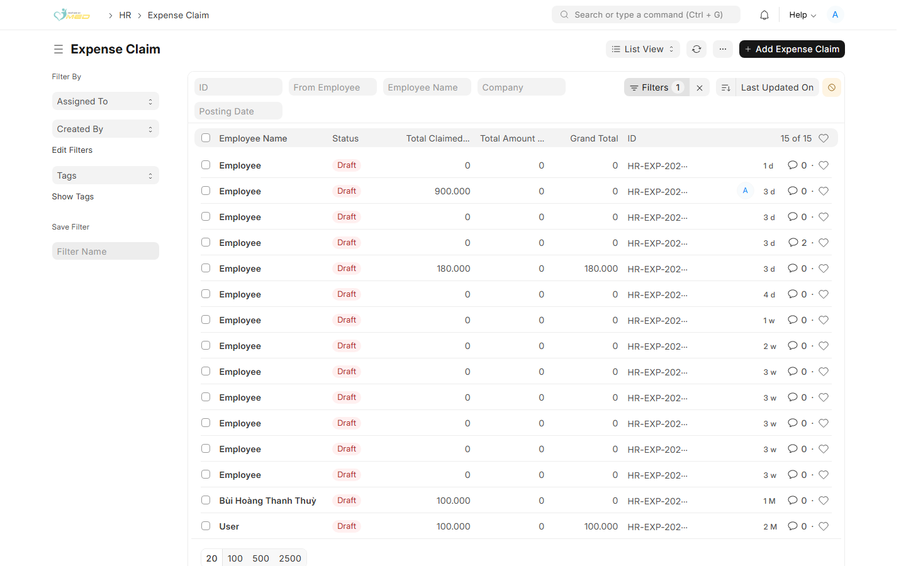
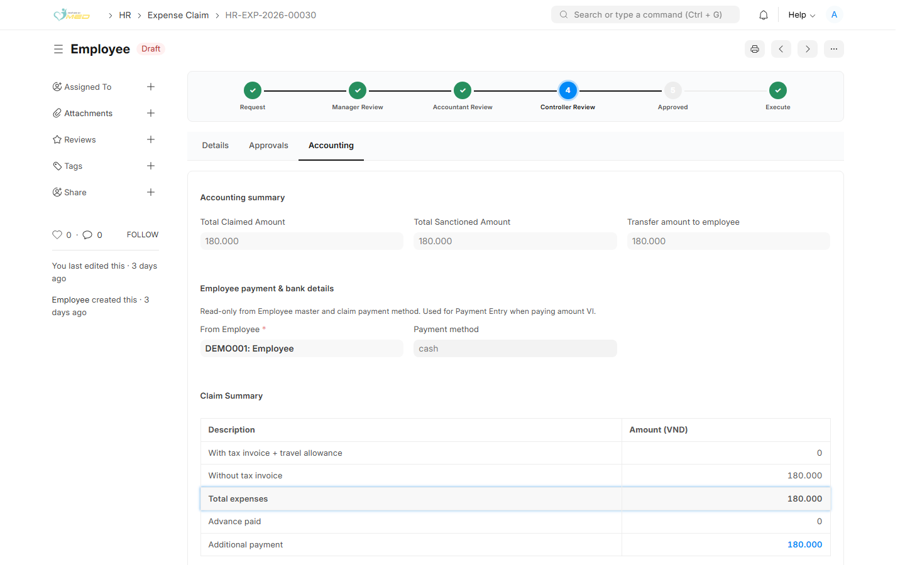

Mục đích
Bạn rà soát phiếu sau khi người duyệt đã duyệt chi tiết chi phí thực tế. Trên thanh quy trình, bước Accountant Review đang sáng thì phiếu đang chờ bạn.
Chi đề nghị tạm ứng và chi phần còn lại sau khi Kiểm Soát Trưởng duyệt nằm ở hai hướng dẫn riêng: chi đề nghị tạm ứng và chi sau khi duyệt.
Rà soát Accounting
Bước 1: Mở danh sách
Vào HR → Expense Claim. Cột Status có thể vẫn là Draft. Mở phiếu có bước Accountant Review đang sáng.

Bước 2: Đọc tab Accounting
Phiếu mở tab Accounting. Kiểm tra:
- Accounting summary — Total Claimed Amount, Total Sanctioned Amount (Tổng số tiền được phê duyệt), Transfer amount to employee
- Employee payment & bank details và Payment method
- Claim Summary — Total expenses, Advance paid, Additional payment
Mỗi dòng đã duyệt cần Cost Center trong phân bổ. Chọn Payable Account trước khi chuyển Kiểm Soát Trưởng.

Ảnh minh họa: Phiếu HR-EXP-2026-00030 đã qua Accountant Review và đang ở Controller Review. Các số trên tab Accounting là phần bạn đã rà trước khi chuyển.
Chuyển Kiểm Soát Trưởng
Khi bước Accountant Review đang sáng, mở Actions:
- Approve for Controller — gửi phiếu sang Kiểm Soát Trưởng
- Reject — trả phiếu. Nhập lý do. Nhân viên sửa chi tiết chi phí thực tế rồi gửi lại
Sau Approve for Controller, màn hình về danh sách. Kiểm Soát Trưởng nhận phiếu ở bước Controller Review.
Việc chi tiền
- Phiếu đang chờ đề nghị tạm ứng: làm theo Kiểm Toán chi đề nghị tạm ứng
- Kiểm Soát Trưởng đã Final Approve và còn số phải trả nhân viên: làm theo Kiểm Toán chi sau khi duyệt